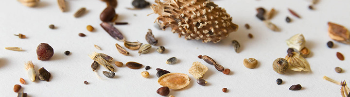
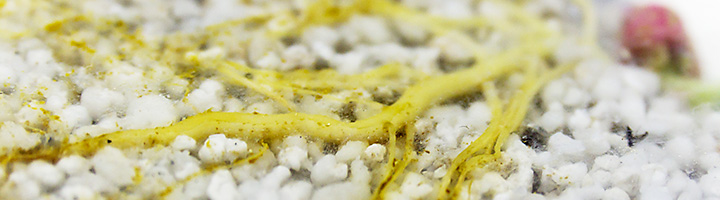
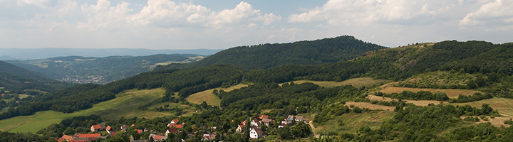

Seznam témat
Plant population ecology
Plant interactions with herbivors
Clonal plants
Plant behaviour and experimental ecology
Pollination ecology
Seed ecology
Plant belowground ecology
Plant-soil feedback
Ecophysiology of plants in tropical and temperate mountains
Plant adaptations and climate change
Evolution of life-forms and diversification
Conservation biology
History and dynamics of vegetation and landscape
Plants and human through ages
Ecosystems and global change
Structure and history of landscape on different scales
^
Plant population ecology

Dynamics of plant populations
Plant demography, trade-offs, life history and strategy
Plant invasions, metapopulation dynamic, influence of landscape and climate change
Population models of clonal plants
Population biology of plants with systematic pathogens
Recent topics for bachelor and master thesis:
Contact: Zuzana Münzbergová, Zdeněk Janovský, Tomáš Dostálek, Tomáš Koubek
Plant interactions with herbivors

How large herbivoures affect vegetation?
Influence of large mammals activity and behaviour on vegetation and plant community.Are they able to influence plant species pool?
How individuals respond to herbivory?
Large herbivours in nature conservation
How insect herbivours affect species population biology?
Recent topics for bachelor and master thesis:
Contact: Barbora Lepková, Eva Horčičková (velcí herbivoři),
Zdeněk Janovský, Zuzana Münzbergová, Tomáš Dostálek (malí herbivoři)
Clonal plants

Clonality as key functional trait of plant species and individuals
Clonality as ability to send offspring to current position
Clonality and response on disturbance
Recent topics for bachelor and master thesis:
Contact: Jitka Klimešová, Jana Duchoslavová, Tomáš Herben, Martin Weiser, Tomáš Koubek
Plant behaviour and experimental ecology

chování rostlin a fenotypická plasticita: jak rostliny reagují na své sousedy, na herbivory a vůbec na měnící se okolní prostředí. Dohody, klamy, hrozby, ústupky, agrese a smír v podání rostlin.
vzájemné vztahy rostlinných jedinců v porostech: jak reakce na sousedy určuje vlastnosti celého porostu
je fenotypická plasticita v pozadí toho, jak jsou rostliny běžné/vzácné?
jak se rostliny starají o potomstvo – jak podstrojují klonálním potomkům a do jaké míry je používají jen jako rozšířené orgány pro získávání zdrojů pro sebe?
Recent topics for bachelor and master thesis:
Contact: Martin Weiser, Jana Duchoslavová, Tomáš Herben, Tereza Mašková, Tomáš Koubek
Pollination ecology

jak souvisí vlastnosti květů rostliny se spektrem jejích opylovačů (jeho generalisovaností/specialisovaností), a úspěšností přenosu pylu na jedince stejného druhu
roznášejí pyl motýli jinak než pestřenky a ty jinak než včely? Srovnání hlavních skupin opylovačů v chování a v úspěšnosti přenosu pylu
jak prostorové uspořádání rostlin v populaci a souběžně kvetoucí druhy ovlivňují prostorové chování opylovačů, kradou si rostliny navzájem opylovače, nebo si naopak pomáhají obecným zvýšením atraktivity lokálního porostu
jak houbové patogeny manipulují růst a fenologii rostliny a jejich opylovače, a jak jim tyto schopnosti umožňují se šířit
jak se rostliny vyhýbají samoopylení – co když můj nejbližší soused je geneticky identický, protože to je potomek vegetativního růstu
Recent topics for bachelor and master thesis:
Contact: Zdeněk Janovský, Tomáš Koubek, Klára Koupilová
Seed ecology

kolik živin (a jakých – uhlík nebo dusík/fosfor) připravují potomkům rostliny v semenech, jak to závisí na podmínkách prostředí, kde (asi) semeno bude klíčit?
jak umožňují potomkům efektivní přesun dál od mateřské rostliny a co to ovlivňuje?
vliv souseda aneb vím, kdo vedle mě roste? Změny v klíčení a růstu pod vlivem různých sousedských druhů.
jak rostliny různých stanovišť optimalizují rychlost klíčení a dormanci semen?
Recent topics for bachelor and master thesis:
Contact: Tereza Mašková, Barbora Lepková, Andrea Veselá, Martin Weiser
Plant belowground ecology

jak reagují kořeny v terénu (třeba v zapojené louce) na své sousedy a na dostupnost minerálií. Pomůžou nám znalosti z květináčových pokusů k porozumění tohoto složitého světa venku?
použití molekulárních technik (zejména kvantitativní PCR) pro určení přítomnosti a kvantity kořenů jednotlivých druhů v terénu (protože kořeny pod zemí se nedají jinak rozlišit do druhů)
kořeny a oddenky jako zásobárna živin přes zimu i jako zásobárna pupenů pro rychlý růst na jaře: jak se tím liší jednotlivé rostlinné druhy?
růst kořenů v čase a prostoru, soužití a vzájemná zastupitelnost kořenů a mykorhizních hub
Aktuální náměty možných prací bakalářských/diplomových/disertačních prací: viz SIS
Contact: Martin Weiser, Tereza Mašková, Tomáš Herben, Jitka Klimešová, Pavlína Knobová
Plant-soil feedback

kořeny rostlin mění půdu, v níž rostou, ať už chemicky (změny dostupnosti minerálií, kořenové exudáty), tak i biologicky (růst patogenů a symbiontů). Naším cílem je zjistit, jakou roli tento jev má v přírodě – pro vzájemné vztahy rostlin (kompetici, mutualismus) a jejich úspěšnost v přírodě
jak roli má tento plant-soil feedback pro rostlinné invaze. Jsou úspěšné invazní druhy schopny jej používat pro vlastní růst a potlačení konkurentů? Význam biotické a abiotické složky půdy pro predikci invazivnosti druhů. Význam půdních hub pro intenzitu vnitrodruhové zpětné vazby u invazních druhů.
jak rozlišit jednotlivé složky plant-soil feedbacku (anorganické, organické složky, symbionti a patogeny) pomocí molekulárních a analytických technik
jakou roli má tento plant-soil feedback v dynamice rostlinných společenstev. Zpětná vazba mezi rostlinou a půdou jako klíčový faktor v primární sukcesi na antropogenních substrátech.
lze využít druhových vlastností pro predikci typu a intenzity plant-soil feedbacku. Rychlost dekompozice, produkce kořenových exudátů a struktura kořenového systému jako prediktory interakce rostlin a půdy.
Recent topics for bachelor and master thesis:
Contact: Zuzana Münzbergová, Anna Aldorfová, Eliška Kuťáková, Tomáš Herben
Ecophysiology of plants in tropical and temperate mountains
Ecophysiology of plants in tropic mountains, adaptations for extreme conditions.
Influence of climate seasonality on adaptations, plant traits evolution and species range.
Recent topics for bachelor and master thesis:
Kontakt: Petr Sklenář
Plant adaptations and climate change
Genetic and epigenetic diversity and plasticity and climate change.
Seedlings development as key factor in adaptations.
Adaptations to climate change - experimental evolution.
How change the relations between plants and other organisms (herbivours, fungi, pollinators...) with climate change and what does it mean for plants.
Recent topics for bachelor and master thesis:
- Adaptace druhů ke klimatickým podmínkám
Contact: Zuzana Münzbergová, Tomáš Dostálek, Andrea Veselá
Evolution of life-forms and diversification

- Ecology of parámos, biodiversity and evolution.
- Which factors were important for herbs evolution?
- What is the difference between herbs and trees? Actually, we still do not know everything!
Recent topics for bachelor and master thesis:
Contact: Petr Sklenář, Adam Klimeš, Tomáš Herben
Conservation biology

- Management of important localities.
- Rare species conservation.
- Genetic diversity and fitness of rare species and their conservation, gene flow, inbreding and outbreeding depresion.
- Rare species recolonization, ex-situ conservation.
- Population biology of rare species Minuartia smejkalii.
Recent topics for bachelor and master thesis:
Contact: Zuzana Münzbergová, Jana Knappová, Zdeněk Janovský, Tomáš Dostálek
>History and dynamics of vegetation and landscape

- Vegetation succession.
- Species composition change in last decades.
- Recent vegetation and relationship to the structure in the past.
- Vegetation of post-industrial sites.
- Vegetation science on larger scale and gradients.
- Functional traits of species as factors which led species success in the past - what remains to recent landscape?.
Recent topics for bachelor and master thesis:
Contact: Jan Novák, Adéla Pokorná, Zuzana Münzbergová
Plants and human through ages

- Migration of plants and ancient people. Domestication and species evolution.
- Where lays the beginning of Anthropocene?
- Archeobotany: plant remains and archeological context, botanical identification and co-work with archeologists.
Recent topics for bachelor and master thesis:
Contact: Adéla Pokorná, Jan Novák
Ecosystems and global change

- Experimental paleoecology - phytolites, pollen production and others?
- How climate change influenced plant communities
- Invasions, migrations and local extinctions in long-term scale
- Field works, big data analysis, analysis of plant parts in sediments (pollen, macroscopic remains and charcoal) and similar methods, statistical modeling
Recent topics for bachelor and master thesis:
Contact: Petr Kuneš, Vojtěch Abraham, Alice Moravcová, Kristýna Hošková
Structure and history of landscape on different scales

- Changes in community structure in time and effect of climate.
- Evaluation of conservation importance of ecosystems.
- Origin and history of open habitats in Central Europe and influence of land-use.
Recent topics for bachelor and master thesis:
Contact: Vojtěch Abraham, Jan Novák, Petr Kuneš, Adéla Pokorná